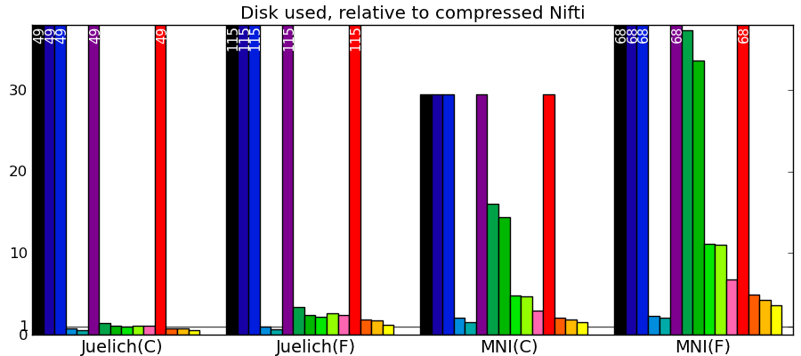

Joblib 0.6: better I/O and Python 3 support
Happy new year, every one. I have just released Joblib 0.6.0 beta. The highlights of the 0.6 release are a reworked enhanced pickler, and Python 3 support.
Many thanks go to the contributors to the 0.5.X series (Fabian Pedregosa, Yaroslav Halchenko, Kenneth C. Arnold, Alexandre Gramfort, Lars Buitinck, Bala Subrahmanyam Varanasi, Olivier Grisel, Ralf Gommers, Juan Manuel Caicedo Carvajal, and myself). In particular Fabian made sure that Joblib worked under Python 3.
In this blog post, I’d like to discuss a bit more the compressed persistence engine, as it illustrates well key factors in implementing and using compressed serialization.
Fast compressed persistence
One of the key components of joblib is it’s ability to persist arbitrary Python objects, and read them back very quickly. It is particularly efficient for containers that do their heavy lifting with numpy arrays. The trick to achieving great speed has been to save in separate files the numpy arrays, and load them via memmapping.
However, one drawback of joblib, is that the caching mechanism may end up using a lot of disk space. As a result, there is strong interest in having compressed storage, provided it doesn’t slow down the library too much. Another use case that I have in mind for fast compressed persistence, is implementing out of core computation.
There are some great compressed I/O libraries for Python, for instance Pytables. You may wonder why the need to code yet another one. The answer is that joblib is pure Python, depending only on the standard library (numpy is optional), but also that the goal here is black-box persistence of arbitrary objects.
Comparing I/O speed and compression to other libraries
Implementing efficient compressed storage was a bit of a struggle and I learned a lot. Rather than going into the details straight away, let me first discuss a few benchmarks of the resulting code. Benching such feature is very hard, first because you are fighting with the disk cache, second because they performances depends very much on the data at hand (some data compress better than others), last because they are three interesting metrics: disk space used, write speed, and read speed.
Dataset used - I chose to compare the different strategies on some datasets that I work with, namely the probabilistic brain atlases MNI 1mm (62Mb uncompressed) and Juelich 2mm (105Mb uncompressed). Whether the data is represented as a Fortran-ordered array, or a C-ordered array is important for the I/O performance. This data is normally stored to disk compressed using the domain-specific Nifti format (.nii files), accessed in Python with the Nibabel library.
Libraries used - I benched different compression strategies in joblib against Nibabel’s Nifti I/O, compressed or not, and against using Pytables to store the data buffer (without the meta-informations). Pytables exposed a variety of compression strategies, with different speed compromises. In addition, I benched numpy’s builtin save_compressed.
I would like to stress that I am comparing a general purpose persistence engine (joblib) to specific I/O libraries either optimized for the data (Nifti), or requiring some massaging to enable persistence (pytables).
Comparing to other libraries
Actual numbers can be found here.
Take home messages - The graphs are not crystal-clear, but a few tendencies appear:
- Pytables with LZO or blosc compression is the king of the hill for read and write speed.
- I/O of compressed data is often faster than with uncompressed data for a good compression algorithm.
- Joblib with Zlib compression level 1 performs honorably in terms of speed with only the Python standard library and no compiled code.
- Read time of memmapping (with nibabel or joblib) is negligeable (it is tiny on the graphs), however the loading time appears when you start accessing the data.
- Passing in arrays with a memory layout (Fortran versus C order) that the I/O library doesn’t expect can really slow down writing.
- Compressing with Zlib compression-level 1 gets you most of the disk space gains for a reasonable cost in write/read speed.
- Compressing with Zlib compression-level 9 (not shown on the figures) doesn’t buy you much in disk space, but costs a lot in writing time.
Benching datasets richer than pure arrays
The datasets used so far are pretty much composed of one big array, a 4D smooth spatial map. I wanted to test on more datasets, to see how the performances varied with data type and richness. For this, I used the datasets of the scikit-learn, real life data of various nature, described here:
- 20 news - 20 usenet news group: this data mainly consists of text, and not numpy arrays.
- LFW people - Labeled faces in the wild, many pictures of different people’s face.
- LFW pairs - Labeled faces in the wild, pairs of pictures for each individual. This is a high entropy dataset, it does not have much redundant information.
- Olivetti - Olivetti dataset: centered pictures of faces.
- Juelich(F) - Our previous Juelich atlas
- Big people - The LFW people dataset, but repeated 4 times, to put a strain on memory resources.
- MNI(F) - Our previous MNI atlas
- Species - Occurence of species measured in latin America, with a lot of missing data.
Actual numbers can be found here.
What this tells us - The main message from these benchmarks is that datasets with redundant information, i.e. that compress well, give fast I/O. This is not surprising. In particular, good compression can give good I/O on text (20 news). Another result, more of a sanity check, is that compressed I/O on big data (Big people, ) works as well as on smaller data. Earlier code would start to swap. Finally, I conclude from these graphs, that compression levels from 1 to 3 buy you most of the gains for reasonable costs, and that going up to 9 is not recommended, unless you know that your data can be compressed a lot (species).
Lessons learned
I’ll keep this paragraph short, because the information is really in joblib’s code and comments. Don’t hesitate to have a look, it’s BSD-licenced, so you are free to borrow what you please.
- Memory copies, of arrays, but also of strings and byte streams can really slow you down with big data.
- To avoid copies with numpy arrays, fully embrace numpy’s strided memory model. For instance, you do not need to save arrays in C order, if they are given to you in a different order. Accessing the memory in the wrong striding direction explains the poor write performance of pytables on Fortran-ordered Juelich.
- When dealing with the file system, the OS makes so much magic (e.g. prefetching) that clever hacks tend not to work: always benchmark.
- Depending on the size of the data, it may be more efficient to store subsets in different files: it introduces ‘chunk’ that avoid filling in the memory too much (parameter cache_size in joblib’s code). In addition, data of a same nature tends to compress better.
- The I/O stream or file object interfaces are abstractions that can hide the data movement and the creation of large temporaries. After experiments with GZipFile and StringIO/BytesIO I found it more efficient to fall back to passing around big buffer object, numpy arrays, or strings.
- For reasons 4 and 5, I ended up avoiding the gzip module: raw access to the zlib with buffers gives more control. This explains a good part of the differences in read speed for pure arrays with numpy’s save_compressed.
One of my conclusions for joblib, is that I’ll probably use Pytables as an optional backend for persistence in a future release.
Details on the benchmarks
These benchmarks where run on a Dell Lattitude D630 laptop. That’s a dual-core Intel Core2 Duo box, with 2M of CPU cache.
The code for the benchmarks below can be found on a gist.
Thanks
I’d like to that Francesc Alted for very useful feedback he gave on this topics. In particular, the following thread on the pytables mailing-list may be of interest to the reader.